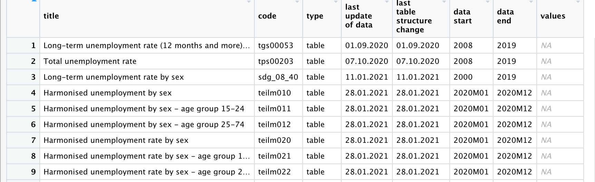

# Rパッケージpwtのインストール
install.packages("pwt10")2. マクロ・データ
今では国際機関，政府,研究組織によって多くのデータが提供されています。そ うしたデータを取得するには，その機関・組織のサイトにアクセスし，csv,EXCEL等のファイルを直接ダウンロードすることによっても，もちろん可能です。し かし，すでに述べたように，Rには，国際機関，研究組織等の提供するデータベースからデータを取得するパッケージが多く開発されています。そうしたパッケージを利用すれば，シームレスかつ再現可能な形でのデータの読み込みが可能となります。本資料では最初に，以下のマクロ経済統計データベースをとりあげます．
| DB提供機関 | マクロデータ概要 | 対応する節 |
|---|---|---|
| フローニンゲン大学成長・発展センター | 所得，経済発展データ等 | 2.1 |
| 世界銀行 | 世界開発指標 | 2.2 |
| EU統計局 | EUデータ（人口，経済，インフラ等） | 2.3 |
| European Commission’s Directorate General for Economic and Financial Affairs | AMECO マクロ経済データ | 2.4 |
| OECD | OECDデータ | 2.5 |
| IMF | 国際金融等のデータ | 2.6 |
| ILO | 労働統計 | 2.7 |
| DBnomics | データベース集 | 2.8 |
2.1 Groningen Growth and Development Centre
1992年にフローニンゲン大学の経済学部内に設立されたGroningen Growth and Development Centre（GGDC）は,現在ではグローバリゼーション、テクノロジー、制度的変化の相互作用と、それが長期的な経済成長、構造変化、生産性、不平等に与える影響を研究する研究センターとなっています。同センターは次のようなデータベースを公開しています。
| データベース名 | 提供データ | Rパッケージ |
|---|---|---|
| Penn World Table | 所得，産出高，投入および生産性 | pwt10.0 |
| 10 Sector Database | セクター別産出，投入，生産性 | |
| World Input-Output Database | グローバル・バリューチェーン | |
| The Maddison Project Database | 歴史的発展 | maddison |
このうちRパッケージが開発されている２つのデータベース-Penn World TableとThe Maddison Project Database-を紹介しましょう。
2.1.1 Penn World Table ― pwt10
Penn World Tableは経済研究においてもっとも頻繁に利用されているデータベースの１つと言えるでしょう。これは所得，産出高，投入および生産性に関する情報を提供するデータベースです。1950年から2017年の182ヵ国をカバーしています（基準年は2011年）1。 pwt10.01はデータパッケージです。country（国名），isocode（3桁の国コード）, year（年）, currency（各国の通貨単位）の変数の他に，rgdpe（支出面の実質GDP），rgdpo（生産面の実質GDP）,hc(1人あたり人的資本指数)などを含む48の時系列データが提供されています。それではinstall.packages()を使ってRにインストールしましょう。
Rパッケージptw10はデータだけのパッケージです。library()，data()関数で読み込みます。ス クリプトに次のように入力し，[Run]をクリックしてください。
# pwt10の読み込み
library(pwt10)
data("pwt10.01")
# pwt10.1のデータを表示させる
pwt10.01
# pwtデータの変数名を表示させる
glimpse(pwt10.01)データ自体は更新され，現在，バージョン10.01となっています。glimplse(pwt10.01)を実行することにより，12,810の観察値×52の変数のデータが確認されます。データセットの最終数行を表示させるtail()関数を使ってこのデータセットの最後の部分を見てみましょう。ちなみにtail()関数と反対の結果を出力するのがhead()関数です。head()関数はデータフレームの冒頭部分を表示させます。
tail(pwt10.01)ここでpwt10データを使ってジンバブエ経済を観察してみましょう。そ のためにジンバブエ経済だけ取り出し，zweというオブジェクトに容れます。
# ジンバブエデータを取り出す。
zwe <- pwt10.01 |>
filter(isocode == "ZWE")ここではfilter()関数を利用し、isocodeが”ZWE”に一致する行だけを抽出しています。つまりジンバブエの行を取り出しています。filter()関数の使い方はすでに説明したように次のようになります。
filter(データフレーム名, 抽出条件)ジンバブエデータの取り出しには，パイプ(|>)をつかって”pwt10.01”をfilter()関数に渡しています。こ のためデータフレーム名が省略されています。
ジンバブエのマクロ状態―GDP，雇用，価格の成長率・上昇率―をグラフにし観察してみましょう。そ れぞれの変数名はrgdpe（実質GDP）, emp（就業者数）, pl_c（家計消費の価格水準）です。グラフ作成までの手順は次のようになります．
３つの変数の時系列的推移を描くために，zweからこの３つの変数とyear変数を取り出します．
３つの変数を成長率に変換します．
最後に，３つの変数を表示するグラフを作成します．
手順1：特定の変数(列)の取出し – select()関数
select()関数を使ってyearと３つの変数―rgdpe（実質GDP）,emp（就業者数）,pl_c（家計消費の価格水準）―を抽出します。
zwe <- zwe |>
select(year, rgdpe, emp, pl_c)手順2：成長率の計算
成長率の計算にあたっては対数差分を利用します。変 数を対数に変換するにはlog()を使います。た とえば，log(rgdpe)と入力し，実行すれば（[Run]をクリックすると），Rはrgdpeの対数を返します。さ らに，１期前の対数の値との差をとる必要があります。１期前に変換するためにlag()関数 を利用します。 lag(rgdpe)で１期前の実質GDPの値を指定できます。以上を利用すると，対数差分の計算式は以下のように表現されます。
# 成長率の計算
log(rgdpe) - log(lag(rgdpe))この計算式を利用し，mutate()関数を使って成長率変数を作成します．mutate()は既存の変数（列）に関数を適用し，新たな変数を作成する関数です。新 たな変数の名前はこの例では既存の変数の冒頭にg_をつけたものにしています。
zwe <- zwe |>
mutate(
g_rgdpe = log(rgdpe) -log(lag(rgdpe)),
g_emp = log(emp) -log(lag(emp)),
g_pl_c = log(pl_c) -log(lag(pl_c))
)以上をまとめてスクリプトに書くとつぎのようになります。
zwe <- pwt10 |>
filter(isocode == "ZWE") %>%
select(year, rgdpe, emp, pl_c) %>%
mutate(
g_rgdpe = log(rgdpe) -log(lag(rgdpe)),
g_emp = log(emp) -log(lag(emp)),
g_pl_c = log(pl_c) -log(lag(pl_c))
)これを実行すると，３つの変数とその成長率変数をもつジンバブエデータが作成されます。V iew()関数で確認してみてください。
View(zwe)手順3：グラフの作成 - ggplot2
グラフの作成にはggplot2パッケージを利用します。
# GDP成長率のグラフ作成
zwe_growth <-ggplot(data = zwe) +
geom_point(mapping = aes(x =year, y = g_rgdpe))+
geom_line(mapping = aes(x = year,y = g_rgdpe))+
geom_abline(intercept = 0,slope = 0)+
labs(x="year", y= "Growth rate")+
theme_bw()ここではGDP成長率のグラフを作成し，グラフをzwe_growthと名前をつけたオブジェクトに容れています。ちなみに，コンソール画面にzwe_growthと入力してみてください。
zwe_growth次のようなジンバブエの対前年比GDP成長率が表示されるはずです。
同じようして，インフレ率と雇用成長率のグラフを作成してみましょう。
# インフレ（価格上昇率）のグラフ作成
zwe_inflation <- ggplot(data = zwe) +
geom_point(mapping = aes(x = year, y = g_pl_c))+
geom_line(mapping = aes(x = year,y = g_pl_c))+
geom_abline(intercept = 0,slope = 0)+
labs(x="year",y="Inflation")+
theme_bw()# 雇用成長率のグラフ作成
zwe_emp <- ggplot(data = zwe) +
geom_point(mapping = aes(x = year, y = g_emp))+
geom_line(mapping = aes(x = year,y = g_emp),lty="dashed")+
labs(x="year",y="Employment")+
geom_abline(intercept = 0,slope = 0) +
theme_bw()patchworkパッケージはグラフのレイアウトを操作します。操作対象の図を足し算記号（＋）や割り算記号（/）等を使って配置します。詳 細についてpatchworkパッケージサイトを参照してください。
install.packages("patchwork")
library(patchwork)library(patchwork)で呼び出したのちに，次のように入力することで3つのグラフを縦に配置します。
zwe_growth/zwe_inflation/zwe_emp2.1.2 The Maddison Project Database ― maddison
Maddisonプロジェクトは，世界のあらゆる地域の長期的な経済パフォーマンスを初めて定量化した故Angus Maddisonの業績を引き継ぐものです。Maddisonは世界のすべての地域の長期的な経済パフォーマンスを、一貫した枠組みで定量化した著名な経済学者です。
Maddison Project Databaseはローマ時代から現在までの世界の国々の所得の推定値を提供しています。このデータベースのおかげで成長のダイナミクスや長期的な経済成長の要因を調べることができます。
2.1.2.0.1 maddisonのインストール
次のように入力し、maddisonをインストールし、library()でロードします。
# maddisonのインストール
install.packages("maddison")
# maddisonの呼び出し
library(maddison)このパッケージは1人あたりGDPとともにマディソンプロジェクトのデータを含むデータパッケージです。str()でデータフレームの内容をみると,
str(maddison)19,873の行（観察値）と12列（変数）を持つことが分かります。主要な変数は次のとおりです。
| 変数 | 説明 |
|---|---|
| gdp_pc | １人あたり実質GDP |
| iso3c | 国コード |
| continent | 大陸別 |
Maddisonの1人あたり実質GDPをもとに主要経済の長期歴史的推移を確認してみましょう。データフレームmaddisonからfilter()を使ってサンプル国5カ国を取り出します。またデータは17世紀以降にしています。
sample5c <- maddison |>
filter(iso3c %in% c("FRA","JPN","GBR","DEU","USA"), year > 1800)取り出した日本、アメリカ、イギリス、ドイツおよびフランスの長期的な成長率をグラフにしてみましょう。
ggplot(data = sample5c, mapping = aes(x = year, y = gdp_pc, group = country))+
geom_line()+
scale_y_log10()+
labs(x = NULL, y = "GDP per capita")+
theme_minimal()推移を見ると、私たちの生活が豊かになり始めたのが20世紀に入ってからだということ,とくに第２次大戦以後だということが分かります。データが得られる範囲内では、それまでのおよそ2世紀にわたり持続的な成長は観察されません。
2.2 世界銀行World Bank ― WDI
世界銀行が提供する世界開発指標WDI（World Development Indicators）は,グローバルな開発状況と貧困について国際的に比較可能な統計をまとめたものです。こ のデータベースには，217の経済と40以上の国グループの1,600の時系列指標が収録されています。ま たその多くの指標のデータは50年以上前までさかのぼることができます。
WDIデータは，さまざまな方法で取得できるようにされています。詳 しくは世銀ホームページを参照してください。フ ァイルが大きいためダウンロードに多少時間がかかりますが，すべてのデータ（ExcelおよびCSV形式ファイル）をまとめてダウンロードすることも可能です。
このWDIデータを利用するためのRパッケージWDIが開発されています 。これ以外にもwbstatsというパッケージもありますが，ここではWDIを紹介します。RパッケージWDIは，世界銀行によって運営される40以上のデータベースからデータを検索・ダウンロードすることを可能にしています。そ うしたデータベースには世界開発指標(WDI）はもちろんのこと，国際債務統計，Doing Business,人的資本指数，サブナショナルな貧困指標も含まれます。
2.2.1 インストール方法
RパッケージWDIはCRAN上で公開されていますのでインストールにはinstall.packages()を利用します．コ ンソール画面に次のように入力し，エンターキーを押してください．
# WDIのインストール
install.packages("WDI")WDIを利用するために，スクリプト画面にlibrary(WDI)と入力し，実行しておきます．
# WDIのロード
library(WDI)2.2.2 データを探す- WDISearch()
データを探すためにはWDIパッケージに用意されたWDIsearch()関数を使います。こ の関数は利用可能なWDIデータ系列のコード名，名前，説明，およびデータソースからなる行列を返します。基本的な書式は以下の通りです。
WDIsearch(string = "検索語", field = "name", short = TRUE, cache = NULL)それぞれの引数を説明しましょう．
string = ” “に検索語（文字列）を入力します。WDIsearchは文字列マッチング関数grepを使い，”検索語”を探します。またcaseを無視します（igunore.case=TRUE）ので，正規表現―簡単に言えば，通常の文字―が利用可能です。
field = ” “に検索するフィールドを指定します。利用可能なフィールドは”indicator”, “name”, “description”, “sourceDatabase”, “sourceOrganization”です。たとえば “name” と入力すれば，データのnameの中を検索します．
short = 既定値はshort=TRUEです。この場合，指標コードと名前だけを返します。short=FALSEの場合，指標コード，名前，説明およびデータソースを返します．
cache: WDIcache関数によって作成されるデータリストを返します。省略された場合（あるいはNULLの場合），WDIseachはデータ系列のローカルリストを探します．
たとえば，GDPに関するデータを探すとしましょう．こ の例では検索文字列を"gdp"とし，探すフィールドを"name"にしています。ま た詳しい説明を得るためにshort=FALSEと設定しています。検索結果をオブジェクトgdpに格納します。gdp <- WDIsearch(string = "gdp",field = "name",short = FALSE, cache = NULL)この結果をView(gdp)でみると，539×5の行列が返されます。こ こで重要なのはindicator変数です．こ れは指標コードであり，ダウンロードのさいに利用されます。
絞り込みが不十分なため，539行のデータ系列が表示されてしまっていますが，スクロールダウンして行くと，448行めにGDP(constant 2010 US$)が見つかります。そ のindicator名はNY.GDP.MKTP.KDです。以下の例においては，これをダウンロードします．
2.2.3 データをダウンロードする- WDI()
データをダウンロードするためにはWDI()関数を利用しますが，利用方法は次のようになります.
WDI(country = "all",indicator = "NY.GDP.MKTP.KD",start = 1960, end = 2020, extra = FALSE, cache = NULL)この関数は６つの引数をとります．そ れぞれを簡単に説明しましょう.
country = ” ” : ” “の中にダウンロード対象の国名（ISO-2文字コードで表現された国名）を入力します。たとえば，”US”,“CA”,“JP”です。複数の国を指定したい場合，c()を利用します。 country = c(“US”,“CA”,“JP”) と入力します。なお，“all”と入力すると，すべての利用な国のデータがダウンロードされます。
indicator = 指標のコード名を入力します。これは上の表のindicator列に表示されているものになります。
start = データの開始年です。通常整数フォーマットの年です（ただし，1960以上）。
end = データの終了年です。言うまでもなく，start引数に指定した値より大きくなければなりません。
extra = :TRUEの場合，地域，iso3コード，所得水準といった追加的な変数を返します。
WDIcache()によって作成されるリストで，extra = TRUEのとき利用されます。
それではWDI()関数を使って，アメリカ経済のGDP(constant 2010 US$)をダウンロードしてみます。こ のGDPデータのindicatorコードは，上述のとおり，NY.GDP.MKTP.KDです。ダ ウンロードしたデータはgdp_usという名前をつけたオブジェクトに格納します。
gdp_us <- WDI(country = "US", indicator = "NY.GDP.MKTP.KD", start = 1990, end = 2019, extra = FALSE, cache = NULL) head()やView()関数を使ってダウンロードしたデータを確認してみてください．
head(gdp_us)最後に，ダウンロードしたGDPデータをggplot2を使ってグラフにしてみましょう．
ggplot(data = gdp_us, mapping = aes(x = year,y = NY.GDP.MKTP.KD))+
geom_line(color = "gray")+
geom_point(col = "purple",size = 2.5)+
scale_x_continuous(breaks = seq(1990, 2020, by = 5))+
labs(title = "USA GDP, constant 2010 US$", y = "GDP",x = NULL)+
theme_minimal()これを実行すると，[Plots]ウィンドウに上のグラフが表示されます。
2.3 EU統計局Eurostat - eurostat
欧州委員会の統計局であるEurostatは,オープンデータサービスを通じてヨーロッパの人口統計，経済，健康，インフラ，交通などに関する数千ものデータセットを提供しています。Rパッケージeurostatはそうした欧州統計局のオープンデータ取得のためのパッケージです。ヨーロッパ経済を実証分析の対象とする場合,とても有益なパッケージです。
2.3.1 Rパッケージeurostatの利用法
2.3.1.1 パッケージeurostatのインストール
最初に，次のようにコンソール画面に入力しエンターキーを押し，eurostatをインストールします。
# eurostatのインストール
install.packages("eurostat")さらにlibrary()でパッケージeurostatを呼び出し，利用できるようにしておきます。
# eurostatの呼び出し
library(eurostat)2.3.1.2 データを探す―get_eurostat_toc(), search_eurostat()
get_eurostat_toc() 関数get_eurostat_toc()はeurostatのデータセットの目次をダウンロードする関数です。最初に，この関数を使って目次をダウンロードしてみましょう。ここではダウンロードした目次をオブジェクト―euという名前にしています―に容れます.
# eurostatの目次取得し,オブジェクトeuに格納
eu <- get_eurostat_toc()スクリプト画面にView(eu)と入力し，[Run]をクリックすると，オブジェクトeuの内容が表示されます。これは10,004行×8列のデータフレームです。１列目のtitleはデータセット名，２列目のcodeはデータセットのコード番号です。このcode列の値が，選択されたデータセットをダウンロードするために使用されます。次のtype列はデータセットかフォルダかどうかを示しています。last update of data列はデータの最新の更新日，last table structure changeはテーブル構造の最新の変更時点，そして次の2つの列はデータの開始時期と終了時期を示しています。

search_eurostat()
特定の検索ワードを指定し,データを探すためにはsearch_eurostat()関数を使用します。たとえば,search_eurostat()関数の引数に “unemployment”と入力し，失業に関連したデータセットを探してみましょう。ここではその結果をパイプ(|>)でView()関数につなげてViewウィンドウで表示させています。
# "unemployment"の検索
search_eurostat("unemployment") |> View()
search_eurostat()関数の基本的な書き方は以下のとおりです。
search_eurostat(pattern="検索語", type = "dataset", fixed = TRUE)このように引数にpattern,type,fixedの３つをとります。
pattern=” “,” “の部分に探したいデータに関連したキーワードを入力します。これによりtype=引数で指定した内容に応じてデータセットやテーブルが返されます。
type= ” “にはdataset, folder, table, もしくは以上のすべてを指定するallのいずれかを入力します。これにより対応したEurostatのテーブルが出力されます。デフォルトではdatasetです。
fixedにはTRUE, FALSEの論理値をとります。TRUEの場合,patternはマッチされる文字列となります。より複雑なregexマッチングが必要とされる場合,FALSEをとります。
2.3.1.3 データをダウンロードする―get_eurostat()
データをダウンロードするにはget_eurostat()を使います。もっとも基本的な書式は次のようになります。
get_eurostat(id, time_format = "", filters = "", type = "")この関数はおもな引数として次のものをとります.
id= ” “:” “にデータセットのコード名を指定します。
time_format= ” “: eurostatフォーマットの時間列をどのタイプに変換するかを指定します。”date”（既定値）と入力した場合,期間の最初のデータによって日付フォーマットDateへと変換されます。“num”を指定すると,数値へと変換されます。テーブルが年次データの場合,デフォルトの日付フォーマットDateを使用するよりも,数値numの時間変数を使用した方が便利です，
filters = ” “:”none”を指定した場合,データセット全体が取得されます.一部分を取得したい場合,ここにリストを入れます（以下の例を参照してください），
type= ” “: 変数のタイプを指定します。具体的には”code”（デフォルト）もしくは “label”となります.これは変数の値を知りたいときに便利です（以下の例を参照してください）。
それでは具体的な例を使ってデータをダウンロードしてみましょう。ここでは EUの「住宅価格」データを探すことにします。最初に，上で説明したsearch_eurostat()関数を使って取得するデータのidを確認します。その上でget_eurostat()関数を利用し,イギリス,フランス,スペインの「住宅価格」データを取得してみましょう。
検索結果をオブジェクトhouseに容れます。
house <- search_eurostat("House",type= "table") View(house)の結果をみると,13行めにHouse price index - annual data（住宅価格指数,年次データ）が表示されています。これをダウンロードします.
 キーワード”House”の検索結果
キーワード”House”の検索結果
ここではダウンロードしたデータをhouse_priceと名前をつけたオブジェクトに容れます。get_eurostat()の引数id = ” “には、検索結果のcode変数のtipsho20 を利用します。引数time_format=”num”では数値を指定しています。
house_price<-get_eurostat(id="tipsho20",time_format = "num",type = "code")これにより４つの変数,1,483の観察値がダウンロードされます。結果をstr()で表示してみます。
str(house_price)
最初の変数unit（単位），２番目の変数geoは地理情報,３番目の変数timeは年，最後の変数valuesが住宅価格指数を示しています。しかし,実はこれだけではそれぞれの変数がとる値が何を意味しているかは分かりません。少なくとも分かりづらい表示になっています。とりわけ,unit変数がコード名で表記されているため, “INX_A_AVG”等がわかりません。ダウロードするさいの引数type = “label”とした方が良いでしょう。デフォルトではコード名で表示されます（引数type = “code”）。変数の値の意味を知るには変数のラベルを表示させた方がコード名よりも便利です。
house_price <- get_eurostat(id="tipsho20",time_format = "num",type = "label")type = “label”でダウンロードした上で，次に，以下のように入力し,変数unitがどのような値を持つか確認してみて下さい。
house_price |> distinct(unit)unit変数は1,403行から形成されますが,すべて異なった値をとるわけではありません。distinct()関数はデータフレームから()内に指定した変数のうちユニークな,つまり異なった値（行）だけを選択します。つまりユニークな値は―以下のdistinct()関数の結果をみると―３種類だけです。

以下の例でunit変数の値を抽出条件とすることによって特定の行を抽出します。
2.3.1.4 住宅価格上昇率のグラフを描く
いくつかのヨーロッパ経済をピックアップし，住宅価格（年平均変化率）の推移と１時点における住宅価格変化率をみてみましょう。このために次のような作業を行います。
複数の国を指定し,住宅データをダウンロードする.
unit変数にもとづき年平均変化率を示す値（行）を抽出する.
ggplot2を利用し,ダウンロードしたデータの時系列グラフを作成する.
地理情報を利用し,ヨーロッパ地図上に2018年の住宅価格（年平均変化率）を表示させる.
1.複数の国を指定し，住宅データをダウンロードする
最初に,国コードを容れたベクトルを作成しておきます―isoという名前にします。直接get_eurostat()関数において指定しても良いのですがスクリプトが見づらくなりますので,事前に,この作業を行っておきます。
# オブジェクトisoに利用する国を容れる
iso <- c("FR","DE","ES","IT","SE")2. unit変数にもとづき年平均変化率を示す値（行）およびサンプル国を抽出する
house_price_eu <- house_price |>
filter(unit == "RCH_A_AVG", geo %in% iso)変数unitのとる値のうち年平均変化率を表現するラベルは”RCH_A_AVG”ですのでfilter()関数の中の抽出条件の１つにunit == “RCH_A_AVG”を指定しています。また,国を示す変数はgeoですが,このうちベクトルisoに容れた複数の国を選択するためgeo %in% isoを利用しています。この表記が意味しているのは,「geo変数がisoベクトルの中のいずれかに等しい国コードをとる行を選択しなさい」ということを意味しています。これによりgeo変数のうちisoベクトルの中の国のいずれかに等しい行だけが選択されます。
これで行の抽出条件にマッチする行だけが選択され,house_price_euというオブジェクトに格納されます。View(house_price_eu)やstr(house_price_eu)を利用し,house_price_euの内容を確認してみてください。
3. ggplot2を利用し,ダウンロードしたデータの時系列グラフを作成する
ggplot(data = house_price_eu, mapping = aes(x = time, y = values))+
geom_point(mapping = aes(shape = geo))+
# 点の形状で国別を示すためにaes()の中でshpae = geoと指定
geom_line(mapping = aes(lty=geo))+
# さらにgeom_line()で線を重ねる
# 線の種類で国別表示するため,aes()の中でlyt=geoと指定
labs(x="year",
y="Housing price",
subtitle = "Housing price (Annual average rate of change %)")+
theme_bw()このスクリプトを実行すると,以下のようなグラフが出力されます.

4. 地理情報を利用し,ヨーロッパ地図上に2015年の住宅価格（年平均変化率）を表示させる
上のグラフでは各国の住宅価格上昇率の時間的推移を比較しましたが,次に2015年の１時点をとり各国を比較してみましょう。そのさいeurostatの提供する地理空間情報2を利用し,2015年の住宅価格をヨーロッパの地図上に描きます。最初に出力されるグラフを示しておきましょう。地理情報の使い方の詳細については2.3.2で説明します。

出力される結果は上のようになります。この図を描くための詳しい説明は2.3.2に譲り,ここではスクリプトだけ示しておきます。手順は４つです。
手順① ヨーロッパの地図データの取得
手順② 住宅価格データから特定の国と2015年のデータを抽出
手順③ ２つのデータフレームの結合
手順④ geom_sf()の利用
①ヨーロッパの地図データを取得し,そのデータをshp_0という名前をつけたオブジェクトに容れる
shp_0 <- get_eurostat_geospatial(resolution = 10, nuts_level = 0, year = 2016)②上で取得した住宅価格データからヨーロッパ諸国と2015年のデータを抽出する
そしてその結果をhousing2015というオブジェクトに容れます。最初に,上記のisoベクトルを次のように書き換え,サンプル国を拡充しておきます。
iso <- c("AT", "BE", "CY","CZ", "DE", "DK", "EL", "ES", "FI", "FR", "HR", "IE", "IT", "LT","LU", "LV", "MT", "NL", "PT", "SE")housing2015 <- house_price |>
filter (unit == "RCH_A_AVG", geo %in% iso, time == 2015)③オブジェクトshp_0とhousing2015を結合する
マージしたデータは地理データと住宅価格データを持つことになります。マージしたデータにはmap_housingというオブジェクト名を与えています。２つのオブジェクトの結合にはinner_join()関数を使っています。
map_housing <- inner_join(shp_0,housing2015, by = "geo")④ggplot2―geom_sf()―を利用し,ヨーロッパ地図上に,住宅価格上昇率を描く
ggplot(data = map_housing) +
geom_sf(mapping = aes(fill=values),color = "white",size = 0.5)+
xlim(c(-10,37))+
ylim(c(34,70))+
scale_fill_continuous_tableau(palette = "Classic Gray")+
labs (
subtitle = "Housing price (Annual average rate of change), 2015",
fill = "% Annual average\nrate of change") +
theme_classic()全体のスクリプトをまとめると,次のようになります.
# ヨーロッパの地理空間データをダウンロード
shp_0 <- get_eurostat_geospatial(resolution = 10,nuts_level = 0,year = 2016)
# サンプル国を指定
iso <- c("AT", "BE", "CY","CZ", "DE", "DK", "EL", "ES", "FI", "FR", "HR", "IE","IT", "LT","LU", "LV", "MT", "NL", "PT", "SE")
# サンプル国の住宅価格（年平均変化率）データを取得.
housing2015 <- house_price |>
filter (unit == "RCH_A_AVG", geo %in% iso), time == 2015)
# 地理空間データと住宅価格データを結合
map_housing <- inner_join(shp_0,housing2015, by = "geo")
# ヨーロッパの地図上に住宅価格を表示.
ggplot(data = map_housing) +
geom_sf(mapping = aes(fill=values),color = "white",size = 0.5)+
xlim(c(-10,37))+
ylim(c(34,70))+
scale_fill_continuous_tableau(palette = "Classic Gray")+
labs (
subtitle = "Housing price (Annual average rate of change), 2015",
fill = "% Annual average\nrate of change") +
theme_classic()このようにRパッケージeurostatを利用することにより,わずか10数行のスクリプトを書くだけで上のグラフを描くことができます。
2.3.2 Eurostatの応用例 ― 地理空間情報の利用
北欧諸国は多くのミステリー小説の傑作を生み出しています。そうした背景には社会経済的要因はもちろんのこと犯罪を身近なものと受け止める社会不安があるのかもしれません。そこで欧州委員会統計局Eurostatが提供する犯罪や暴力に対する不安度を示す指標によって,そうした社会的不安を代理させ観察することにします。そして同指標を視覚的に示すためにEurostatの提供する地理空間情報と結合し,ヨーロッパ地図上に表示します.主な手順は次のようになります,
地理空間情報(シェイプ・ファイル)をダウンロードし,ヨーロッパ地図を描く.
犯罪・暴力・破壊行為に対する不安度を示す指標をダンロードする.
1と2のファイルを結合し,不安度指標を表示した北欧地図を描く.
2.3.2.1 地理空間情報のダウンロードとggplot2による描画―sfパッケージ
地理空間データ分析用のRパッケージとしてsfパッケージがあります。sfパッケージはsimple featuresというGIS(geographic information system)データ規格をRで扱うためのパッケージです。Eurostatの提供する地理空間情報データを扱うために，最初に，このパッケージをインストールしておきます。コンソール画面に次のように入力し,エンターキーを押してください。次いでlibrary( )で呼び出しておきます。
# sfパッケージのインストール
install.packages("sf")
# sfパッケージの呼び出し
library(sf)このパッケージを利用することによって地理空間データのさまざまな処理が可能となります。
すでに幾度も登場しているggplot2も,バージョン3.0.0以後sfクラスのデータを扱えるようになりました。sfクラスのオブジェクトのプロットにはgeom_sf()という関数を使います.
Eurostatの地理空間情報は,国レベルの情報にとどまらず,それ以上に詳細な行政単位レベルの情報も提供しています。1970年代初頭,Eurostatは欧州連合（EU）の地域統計を作成するために,EUの領土を分割するための統一された,一貫したシステムとしてNUTS (Nomenclature of territorial units)分類を設定しました。イタリアを例にとれば,NUTSレベル0はイタリアという国そのものの（イタリア全土）,NUTSレベル１はNord-Ovest（北西部）, Sud（南部）といった地域です。さらにNUTSレベル２はPiemonte（ピエモンテ）, Liguria（リグーリア）, Lombardia（ロンバルディア）といった州です。さらに細かいレベルのNUTSレベル３はTorino（トリノ）, Genova（ジェノバ）, Milano（ミラノ）等の都市空間を示します。これにより,たとえば,個人世帯の可処分所得の地理的分布を調べたいとき,NUTSレベル2すなわち各国の州レベルまで調べること（グラフで表示すること）も可能です。
それでは最初に,NUTSレベル１と２のヨーロッパ地図を描いてみましょう。地図を描くためにはシェイプファイルshapefileという図形情報と属性情報を入れたファイルをダウンロードする必要があります。RパッケージeurostatはGISGOからヨーロッパの地理情報を取得する関数get_eurostat_geospatial()を用意しています.この関数の基本的な用法は次のようになります。
get_eurostat_geospatial(
output_class = "sf",
resolution = ,
nuts_level = ,
year = 2016
)以下はこの関数がとる引数の概要です.
output_class = ” “:” “に sf, df,もしくはspdfのいずれかの文字列を指定することで返されるオブジェクトのクラスを選択します。sfはsimple features,dfは data_frame, spdfはSpatialPolygonDataFrameを表現します。デフォルトは”sf”です。
resolution = : 地理空間データの解像度を指定します。利用可能な解像度は60（1:6,000万）,20（1:2,000万）,10（1:1,000万）,03（1:3,000万）,01（1:1,000万）のいずれかです。
nuts_level = : NUTS分類のレベルを指定します。0,1, 2, 3, allのいずれかをとります。
year = : NUTSのリリース年を指定します。具体的には,2003, 2006, 2010, 2013, 2016 のいずれかを入力します。
それでは地理空間情報をダウンロードしてみましょう。ここではNUTSレベルの異なる２つのオブジェクトを作成します.
# NUTS分類のレベル0で地図情報を取得し,オブジェクトshp0に容れる
shp0 <- get_eurostat_geospatial(output_class = "sf", resolution = 10, nuts_level = 0, year = 2016) # NUTS分類のレベル2で地図情報を取得し,オブジェクトshp2に容れる
shp2 <- get_eurostat_geospatial(output_class = "sf", resolution = 10, nuts_level = 2, year = 2016)オブジェクト―shp0, shp2―は,引数output_class=“sf”を指定していますからsfクラスです。geom_sf()はsfクラスのオブジェクトを扱いますのでこの指定が必要となります（ただし,デフォルトでもsfクラスですから,指定しなくとも結果はsfクラスのオブジェクトとなります）。
NUTSレベル0は国単位を意味します。NUTSレベル２は,上述のように,イタリアで言えばロンバルディアといった州レベルの行政単位まで描かれます。ヨーロッパの地図情報が取得できましたので,ggplot2を利用しヨーロッパ地図を描いてみましょう。ggplot2にはsfクラスのオブジェクトを描くためにgeom_sf()が開発されています。グラフの作成はこれまで紹介したggplot2の利用方法に同じです。基本はggplot(オブジェクト名)+geom_sf()です。
ggplot(shp0)+ # オブジェクト名を入力
geom_sf() # sfクラスのオブジェクトを指定これだけでヨーロッパ地図がプロット画面に出力されます。しかし,かなり広いヨーロッパ地域が表示されてしまいます。そこでx軸,y軸の範囲を限定し,わたしたちが通常目にするヨーロッパを描くとしましょう。そのためにはxlim()を利用し,x軸の範囲を決定します。xlim（c（西に-10度, 東に37度））のように東西の経度を入力します。y軸の範囲も同様に,ylim(c(,))を利用し,緯度を入力します。あるいはggplot2のcoord_map()という関数を使っても良いでしょう。引数xlim=()で経度,ylim=()で緯度の範囲を指定することができます。たとえば,coord_map(xlim = c(-30, 45), ylim = c(30, 75))と入力することによってヨーロッパ地域を指定することができます。
nuts0 <- ggplot(shp0) +
geom_sf()+
xlim(c(-10, 37))+
ylim(c(34, 65))わずか数行の入力で以下のグラフのようなヨーロッパ地図を描くことができます。あわせてNUTレベル2の地図も描いてみましょう。上述のグラフ作成との違いはggplot()にsfオブジェクト名shp2を指定するだけです。
nuts2 <- ggplot(shp2) +
geom_sf()+
xlim(c(-10, 37))+
ylim(c(34, 65))北欧地域だけを描く場合には,x軸範囲とy軸の範囲を以下のように限定すれば,北欧地域だけの地図を描くことができます.
n_euro <- ggplot(shp0)+
geom_sf()+
xlim(c(0,32))+ # 北欧地域の範囲を経度で指定
ylim(c(54,70))+ # 北欧地域の範囲を緯度で指定2.3.2.2 犯罪・暴力・破壊行為に対する不安度データのダウンロード
次に,犯罪や暴力に対する不安度データを地図上に表示するために,犯罪に関連するデータを探します。これはすでに紹介したsearch_eurostat()関数を利用します。 “crime（犯罪）”をキーワードにデータを探してみましょう.
search_eurostat("crime",type="table") |> Vie()上のスクリプトを実行すると,search_eurostat()の結果をView()関数に渡しているため,crimeに関連した検索結果が表示されます。関連するデータテーブルは１つだけでsdg_16_20というファイルです。このデータは地域における犯罪・暴力・破壊行為を報告した人の比率を示しています。そうした点では人々の犯罪や暴力に対する不安度を代理する指標として良いでしょう。
次に,データ・テーブルsdg_16_20をダウンロードし,結果をcrimeというオブジェクトに容れます。
crime<-get_eurostat(id="sdg_16_20",time_format = "num")これによりヨーロッパ諸国の犯罪・暴力・破壊行為の報告者比率データを取得できます。ここから第１に,北欧４カ国とバルト３国の７ヵ国だけを抽出します。このために変数のgeoの値が”DK”,“SE”,“NO”,“FI”,“LV”,“EE”,“LT”のどれかをとる行を抽出します.
filter(geo %in% c("DK","SE","NO","FI","LV","EE","LT"))ここで”geo %in% c()“は「geo変数がc（国コード）の中のいずれかに等しい国コードをとる行を選択しなさい」を意味しています。また,このデータは,incgrpという変数を持っていますが,これはincome group（所得グループ）を示し，所得階層別情報を提供しています。しかし,ここでは所得階層別情報は使いませんのでincgrp変数のうち値がTOTALの行だけを抽出します。そこで上の抽出条件にくわえて次の抽出条件も入力します。
filter(incgrp == "TOTAL")２つの抽出条件をあわせると,次のようになります.
filter(geo %in% c("DK","SE","NO","FI","LV","EE","LT"), incgrp == "TOTAL")さらに,時間も2017年に指定し ― time == 2017 ―,最終的に次のように入力します。
ne_crime <- crime |>
filter(time == 2017, geo %in% c("DK","SE","NO","FI","LV","EE","LT"), incgrp == "TOTAL")filter()の基本コードはfilter(データフレーム名,抽出条件)ですが,ここではパイプ( |>)を利用し,データフレームcrimeを関数filter()に渡していますのでデータフレーム名が省略されています。.最終的に,ne_crimeというオブジェクトに容れます.
以上で,北欧地域の犯罪や暴力に対する不安度を示す指標が取得できました。これを地図上に表示させるために地図情報の入ったshp0と結合します。
3 シェイプファイルshp0と犯罪データファイルne_crimeの結合
ここではヨーロッパの地図情報の入った”shp0”ファイルと,北欧地域の犯罪不安度情報の入った”ne_crime”ファイルを結合します。データフレームの結合にあたってはinner_join()関数を使います。ジョイン_join()は２つのデータテーブルの変数を結合します。inner_join()はby= “キー変数”にしたがってキーの値が等しい観察値が結合されます。したがってキー変数にマッチしない観察値は除外されます.
inner_join()のもっとも簡単な書き方は次のようになります.２つのデータフレームa,bがある場合,
inner_join(データフレームa,データフレームb, by = "キー変数")それではinner_join()を利用し,shp0とne_crimeを,両データフレームに共通のgeo変数を基準に結合します。その上でshp_neというオブジェクトに容れます。
shp_ne <- inner_join(shp_0, ne_crime, by = "geo") これで不安度指標と地理空間情報の入った,74行×17列のデータフレームが作成されました。残りの作業はggplot2を使って不安度指標を色の濃淡で示した北欧地図を描くだけです。
shp_neはsfクラスのオブジェクトです。このため描画にあたってはgeom_sf()関数に渡すだけです。この場合,何よって色分けするかをaes() で指定します。この例では犯罪・暴力・破壊行為の報告者比率を示すvalues変数の値の大きさで色分けします。このために fill = valuesとします。
具体的には,まず最初に,ggplot()にデータフレーム名を指定します。
ggplot(shp_ne) +次に,geom_sf()関数を使ってデータを地図に描きますが,変数valuesを地図上の色の濃淡で表現するためにaes(fiill = )で指定します。
geom_sf(mapping = aes(fill=values),color = "white",size = 0.5)+values変数は犯罪・暴力・破壊行為の報告者比率です。さらにcolor = ” “でボーダー（国境）をwhite(白)で描き,その線の太さをsize = で指定しています。これで基本的な作業は終わりです。実行すると,犯罪・暴力・破壊行為の報告者比率がデフォルトの色の濃淡によって描かれた北欧地図が出力されます。この例ではさらに,scale_fill_continuous_tableau()を使って犯罪・暴力・破壊行為の報告者比率を描く色の濃淡をグレイに変更します。この関数によって連続したカラースケールを指定することができます。引数palett =” “部分に”Blue”, “Red”のように入力します。ここでは白黒印刷にあわせ,グレイの色を採用しています。
scale_fill_continuous_tableau(palette = "Classic Gray")+次に,labs()を使ってタイトルをつけます。
labs(title = "The share of the population who reported \nthat they face the problem of crime, violence or vandalism, 2017", fill = "% the respondent \nfeels crime") +英文タイトルの中のthatの前に"\n"が挿入されていることに気づいたと思います.これはその部分で文書の改行を命令する記号です。またfill = ” “によって色の濃淡を表示するバーのタイトルを指定しています。 最後に,背景のテーマを設定します。
theme_classic()以上のスクリプトをまとめると,つぎのようになります,
ggplot(shp_ne) +
geom_sf(aes(fill=values),color = "white",size = 0.5)+
scale_fill_continuous_tableau(palette = "Classic Gray")+
labs(title = "The share of the population who reported \nthat they face the problem of crime, violence or vandalism, 2017", fill = "% the respondent \nfeels crime") +
theme_classic()これを実行すると,次のようなグラフが描かれます.

見られるように,サンプル経済の中では編集者ミカエル3の活躍するスウエーデンがもっとも高く,リガの犬4が蠢くラトビア等のバルト３国が続きます。バルト海を挟む諸国において犯罪や暴力,破壊行為の問題に直面している人々が多そうです。こうした社会的不安が犯罪小説の創造に寄与しているのかもしれません 。
2.3.2.3 地理空間情報― NUTSレベル3の利用
さらに,スウェーデンに注目し,こうした犯罪の背景―犯罪や暴力,破壊行為―を地域レベルでみてみましょう。これまで地理空間をNUTSレベル０としてきました。つまり国単位で情報を扱っていました。次に,北欧社会の中でも,犯罪や暴力,破壊行為の問題にもっとも強く直面しているスウェーデンに注目し,NUTSレベルを3までブレークダウンし,より詳細な犯罪情報を地図上に描いてみます。
上で利用したデータはNUTSレベル２の情報を提供していませんが,犯罪に関連したNUTSレベル２,3のデータとしては「犯罪記録件数」(Crimes recorded by the police by NUTS 3 regions)があります。このデータをget_eurostat()を利用し,ダウンロードします。これをcrimeという名前をつけたオブジェクトに容れます。本データのidはcrim_gen_regです。
crime <- get_eurostat(id = "crim_gen_reg")最初に,スウェーデンをピックアップします。このためgeo変数にfilter()をかけます。抽出条件をgeo == “SE”とすると,スウェーデンの国内の行政単位のデータ―たとえば,SE1,SE2という記号で表示―は抽出条件に合致しないため,削除されてしまいます。そこで最初にstr.detect()関数を使って”SE”という文字列を持つgeo変数の行を探します。そしてそれと一致したgeo変数の行を抽出します。
filter(str.detect(geo,"SE"))str.detect(geo, “SE”)はgeo変数が “SE”という文字列を含む場合,真TRUEを返します。これにfilter()を適用することによって,str.detect()関数がTRUEを返す行を抽出します。.データは2009年と2010年のみですが,ここでは2010年を採用します。
filter(Date == "2010-01-01")以上,必要な行の抽出が終わりです。これまでのスクリプトをまとめると,以下のようになります。抽出結果をcrime_sweという名前をつけたオブジェクトに容れてあります。
crime_swe <- crime |>
filter(str_detect(geo, "SE"), time == "2009-01-01")次に,NUTSレベル３のデータをダウンロードし,shp3という名前のオブジェクトに容れます
# NUTS分類のレベル3で地図情報を取得し,オブジェクトshp3に容れる
shp3 <- get_eurostat_geospatial(resolution = 10, nuts_level = 3, year = 2016) それでは,crime_sweとNUTSレベル3のシェイプファイルをinner_join()関数を使って結合します。そして結合したファイルをshp3_crime_sweという名前のオブジェクトに容れます。
shp3_crime_swe <- inner_join(shp3,crime_swe, by = c("NUTS_ID"="geo")) by = “キー変数”の部分がこれまでと異なります。２つのファイルを結合するさいに,異なる変数を利用する場合,上述のようにby = c(“NUTS_ID”=“geo”)とします。NUTS_IDはshp_2の中の変数,geoはcrime_sweの中の変数です。
これで地図を作成するデータが出来上がりました。あとはggplot２を利用するだけです。スクリプトは次のようになります。
ggplot(shp3_crime_swe) +
geom_sf(aes(fill=values),color = "white",size = 0.5)+
xlim(c(7,25))+
scale_fill_continuous_tableau(palette = "Classic Gray")+
labs(
title = "Crimes recorded by the police,2010",
fill = "% the number of \ncrimes recorded by the police")+
theme_classic()
ここでは単純に犯罪件数を表示させているだけですから,スウェーデンの中でも大都市圏―Stockholms県,Västra Götalands県やSkåne県等―で犯罪件数が多いことが理解されます。またグラフから理解されるように,犯罪件数には地理的な関連があるかもしれません。犯罪が多発する県の隣接する県でも多そうです。これは空間的なデータが相関していることを示唆しており,空間情報を分析するさいに注意を要する点です。
2.4 European Commision Annual macro-eocnomicデータベース(AMECO) - ameco
AMECOはEUの年次マクロ経済データ集です。EU地域のマクロデータが主ですが，それ以外のOECD諸国も含まれており，40カ国を超える国のマクロデータが提供されています。AMECOサイトからはcsv,xlsx形式等でデータをダンロードすることもできます。
2.4.1 amecoのインストールと読み込み
amecoはデータパッケージです。インストールし，読み込むと利用可能になります。Rパッケージamecoのインストールはinstall.packages(” “), ロードはlibrary()関数を使います。
# amecoのインストール
install.package("ameco")
# amecoのロード
library(ameco)これでデータが利用可能になります。glimpse()関数を使ってデータをみると，8変数列×2,018,002行から構成されていることが分かります。
# データ構造の概観
glimpse(ameco)どのようなデータセットが含まれているかは，sub.chapter変数を見ればわかります。そこで同じデータセットを表示させないように，unique( )関数を利用し，sub.chapterを見てみましょう。
unique(ameco$sub.chapter)これによって102のデータのタイトルを確認できます。たとえば，93行目の”02 Factor productivity, total economy”
2.5 経済協力開発機構 - OECD
OECDが提供するデータは，もちろん，OECDのサイトOECD.Stat からも取得できます。同 サイトに入ると，左側のウィンドウにテーマ別データ一覧が表示されており，ここから目的のデータを探すことができます。ウ ィンドウ上部にある検索ウィンドウからキーワード検索も可能です。
しかし、この方法ではRから離れブラウザでデータを検索し，データをダウンロードすることになります。これは煩わしい作業であることは言うまでもなく，データ分析のための再現性も難しくなるかもしれません。こうした問題に対処するために，RパッケージOECDを利用することが推奨されます。こ のパッケージによってOECDのAPIから動的で再現性の高い方法でデータをダウンロードすることができます。
2.5.1 RパッケージOECDの利用方法
それでは同パッケージをインストールしましょう。コ ンソール画面に次のように入力し、エンターキーを押してください。
# RパッケージOECDのインストール
install.packages("OECD")パッケージを利用するにはlibrary()で呼び出しておく必要があります。ス クリプト画面に次のように入力し、実行しておきます。
# RパッケージOECDの呼び出し
library(OECD)2.5.1.1 データを探す - get_datasets(), search_dataset()
OECDのデータをダウンロードするにはデータ系列のidコードが必要となります。し かし，ほとんどの場合，正確なidコード情報を事前に保有していることは少ないと思います。そ こで最初に，利用可能なデータセットとその説明を含むデータフレームをダウンロードし，その上で検索を始めるのがベストの方法です。こ れはget_datasets()関数で実行できます。
# OECDのデータフレームのリストを取得
get_datasets() |>
head(). # head()関数でデータフレームの冒頭部分を表示head()関数によって最初の６行を表示させています。全 体で1,392行×2列のデータフレームが取得されます。１列目はデータセットのid，２列目titleはデータセットのタイトル名です。こ れによってOECDにおいて、どのようなデータセットが利用可能かが分かります。
データセットの検索方法としてはsearch_dataset()関数を使ってキーワードで検索する方法もあります。たとえば，失業”unemployment”をキーワードに検索してみましょう。こ れを実行すると，コンソール画面に”unemployment”を含んだデータ等の一覧が表示されます。デフォルトでは大文字小文字を区別しません。
search_dataset("unemployment")2.5.1.2 データセットのダウンロード - get_dataset()
それでは最初のデータセットDUR_I―Incidence of unemployment by duration (期間別の失業者発生比率％)をダウンロードしてみましょう。データのダウンロードにはget_dataset()関数を使います。基本的な使い方は次のようになります,
get_dataset("dataset", filter = NULL, start_time = NULL, end_time = NULL,pre_formatted = FALSE)この関数がとる主要な引数は以下のとおりです.
dataset : ダウンロードするデータセットのidを入力します.
filter= : NULLの場合、すべてダウンロードします.
start_time = : データの開始時点.
end_time = : データの終了時点.
この関数を使ってDUR_Iデータを取得し，それをunempというオブジェクトに容れるとします。もっとも簡単なコードは次のとおりです.
unemp<- get_dataset("DUR_I")str(unemp)でデータフレームの中をみると，8変数，155,924の観察値のデータセットがダウンロードされたことが分かります。str()関数はデータフレームの変数（列）や観測値（行）についての情報を出力させる関数です.
str(unemp)引数を指定した形でデータをダウンロードしてみましょう。引数filterを使って日本とドイツのデータ，引数start_tim,end_timeで期間を1990年から2019年のデータをダウンロードするとします。このためにはスクリプトに次のように入力するだけです，
unemp <- get_dataset("DUR_I",filter=list(c("JPN","DEU")),start_time = 1990,end_time = 2019)また，たとえば，filter = “age”のように、変数についてもfilterを適用できます。
2.5.1.3 データ構造を調べる - get_data_structure()
ダウンロードしたデータの内容は，上述のように，str()関数やView()関数を利用して確認することができます。しかし，これだけではそれぞれの変数が何を意味するのか分からない場合があります。たとえば、DURATION変数が「（失業）期間」を表現していることは分かりますが，しかし，その変数がとる “UN1”, “UN3”といった値が何を意味しているかは分かりません。このためデータ構造をチェックする必要があります。
データ構造のチェックにはget_data_structure()関数を利用します。同関数は指定したデータシリーズの変数名とその説明を返します。
# DUR_Iのデータ構造の説明を取得、data_strに容れます.
data_str<-get_data_structure("DUR_I")
# str()関数でdata_strの中を見ます.
str(data_str,max.level = 1)このケースでは表示レベルをmax.level = 1を使い，１に指定しています。max.level=を利用せずに，str(data_str)と入力しても，類似した情報が得られますが，出力画面が煩雑になるので，この例ではmax.level=1に抑えています。
コンソール画面に上のように入力し，エンターキーを押すと，図のような出力結果が得られます。DUR_Iの説明を見ると，VAR_DESCをはじめとし，あわせて12の変数があることが分かります。ここでDURATION変数の詳細を確認してみましょう。コンソール画面にdata_str$DURATIONと入力し，エンターキーを押してみてください。.$記号はデータフレームの中の変数を指定する方法です。つまり、data_str$DURATIONは「データフレームdata_strの中の変数DURATIONを指定」を意味します。
#データフレームdata_strの中の変数DURATIONを指定.
data_str$DURATIONこれにより変数DURATIONのとる値が何を意味しているかを示した一覧が出力されます。これをみると，変数DURATIONの値”UN1”は１月未満,“UN2”は１月以上３ヶ月未満の失業期間を示すことが分かります。
続けて変数AGEのデータ構造も確認しておきましょう。コンソール画面にdata_str$AGEと入力し、エンターキーを押します。
#データフレームdata_strの中の変数AGEを指定.
data_str$AGEこのように，AGE変数はid列に記載されているように1519や1524など７つの値をとります。そしてlabelに示されているように，それぞれ年齢階層に対応しています。たとえば、6599という値は65+と表示されていますので，65歳以上ということが分かります。つまり65歳以上の失業者数です。年齢に関係ない総数は900000という数値で表現されています。
さらに失業者の性別を表現する変数SEXをチェックしておきましょう。
# データフレームdata_strの中の変数SEXを指定
data_str$SEX変数SEXは３つの値をとることが分かります。MEN(男性)，WOMAN(女性)およびMW(両者の合計)です。
2.6 金融データを取得する ― IMF
2.6.1 国際通貨基金(IMF) - imfr
国際通貨基金IFMは金融データを中心に多くのデータを公開しています。Rにはそうしたデータを取得するために便利なRパッケージimfrが開発されています。最初にインストールします。
install.packages("imfr")続けて、library()関数で呼び出します.
library(imfr)これでRパッケージimfrが利用可能となります。I MFがAPIをつうじて公開するデータをダウンロードするには関数imf_data()を利用します.
このimf_data()は以下の引数をとります.
imf_data(
database_id = "",
indicator = "",
country = "",
start = 2000,
end = current_year(),
)database_id = ” ” :ダウンロードしようとする特定のデータベースのIDを指定します。
indicator = ” “: ダウンロードしようとするIMFの指標IDを指定します。
country = ” “: ISOの２桁コードを使って国を指定します。.country = ’all’とした場合、利用可能な国すべてのデータがダウンロードされます。
start =, end = : データの開始年と終わりの年を指定します。
freq: 年次データ(A)、四半期データ(Q)および月次データ(M)かを指定します。たとえば、年次データを取得する場合には、
freq = "A"と指定します。
それではimfrを利用し，IMFからデータをダンロードしてみましょう。ここでの例では，アメリカ，中国および日本の実効為替レートデータをダウンロードし，exch_rateというオブジェクトに容れます。
exch_rate <- imf_data(database_id = "IFS",
indicator = "EREER_IX",
country = c("US", "CN", "JP"),
freq ="A")上のスクリプトを実行することでアメリカ，中国および日本の実効為替レートがダウンロードされます。この実効為替レートは消費者物価にもとづく指数です。ダウンロードされたデータはデータフレーム形式で保存されます。str(exch_rate)でデータの構造・内容を確認してみます。
str(exch_rate)2.6.2 imfrの利用方法
上の例で理解されるように，データをダウンロードするためにはdatabase_id = ““に入力するデータベースID、およびindicator =”“に入力する指標IDの情報を取得しておく必要があります。このために３つの手順をとります.
手順1 データベースを探す― imf_ids( )
手順2 特定のデータベースのコードリストを取得する - imf_codelist()
手順3 指標IDを取得する - imf_codes()
以下の例ではデータベースInternational Financial Statistics(IFS)から実効為替レートをダウンロードすることを想定した手順を紹介します。
手順1 どのようなデータベースがあるのか ― imf_ids( )*
データベースのIDを取得するための関数imf_ids（）を利用します。これを実行した結果をdbIDという名前をつけたオブジェクトに容れるとします。
dbID <- imf_ids(return_raw = FALSE, times = 3)imf_ids()は２つの引数を取ります.
引数return_rawは論理値すなわちTRUEかFALSEを取ります。上の例のように，
return_raw = FALSEと指定した場合，IDとその説明が入ったデータフレームが返されます。return_raw = TRUEの場合には，生のデータフローのリストが返されます.timesは要求の最大回数を指定します.
View(dbID)View()関数によってdbIDの内容を見てみましょう。次のようなデータベース一覧が出力されます。
IMFデータベース一覧
imf_ids()の結果を容れたオブジェクトdbIDの中には260行×２列のデータフレームが入っています。つまり260のデータベースIDが表示されます。View(dbID)によってデータフレームdbIDを内容を見てください。２列の変数すなわちデータベースIDとその説明が表示されます。これを下にスクロールしていくと，IFSというデータベースIDとその説明 ―International Financial Statistics―が見つかります。このIFSがデータをダウンロードするさいimf_data()関数の引数database_id = ““に入力するデータベースIDとなります。
手順2 IFSデータセットの中の指標名を探す ― imf_codelist()
次に，個別のIMFデータベース―この例では”IFS”―からコードリストを取得します。基本的なスクリプトの書き方は次のようになります.
imf_codelist(database_id, return_raw = FALSE, time = 3)これを使って手順１で取得したdatabase_id ―“IFS”― を利用し，データセットの中のcodeリストを取得します。ここではその結果をcodeListという名前をつけたオブジェクトに容れます。
codeList <- imf_codelist(database_id = "IFS", return_raw = FALSE, times = 3)imf_codelist()関数は個別IMFデータベースのコードリストを取得しますが，この関数は次の３つの引数をとります.
database_id: imf_ids()で取得したデータベースID（文字列）を入力します.
return_raw: TRUEかFALSEかの論理値をとります。TRUEを指定した場合、もとのデータ構造リストを返し、FALSEを指定した場合、コードリストのコードと説明の入ったデータフレームを返します.
times: 要求回数を入力します.
これによってデータベースIFSが持つコードリストが取得されます。View(codeList)で中身をみると，次のような一覧が表示されます.
コードリスト
このコードリストのdescription(説明)から理解されるように、指標IDは４行目のcode CL_INDICATOR_IFSに入っていることがわかります.
手順3. 指標IDを取得する ― imf_codes( )
最後に、“CL_INDICATOR_IFS”を使って指標IDを取得します.このためにはifm_codes()関数を利用します。こ の書式はつぎのようになります.
imf_codes(codelist = "", return_raw = FALSE, times = 3)これによってimf_data()関数の引数indicator = ""に指定する指標コードを取得することができます.この関数を利用し、IFSの中の指標コードを取得してみましょう.関数imd_codes()は個別のデータベースのコードを取得しますが、この関数もimf_codelist()と同様の引数をとります.ただし引数codelist = ““にはimf_codelist()によって取得したコード名を入力します.
indicatorID <- imf_codes(codelist = "CL_INDICATOR_IFS", return_raw = FALSE, times = 3)これによって1679行×２列のデータフレームが得られます.View(indicatorID)によって内容を表示すると、指標コード名とその説明の一覧をみることができます.これによってimf_data()を使ってデータをダウンロードするさいに必要な情報、すなわち引数indicator = ““に入力する指標コードの情報が得られます.２列目の指標の説明を下にスクロールさせ、Exchange Rates, Nominal Effective Exchange Rate, Indexを見つけてください.これに対応する１列目の指標コードENEER_IXが入力する情報です.
指標コード一覧
以上の情報にもとづいてデータそのものがダウンロードできます.再度、スクリプトを表示しておきます.
exch_rate <- imf_data(database_id = "IFS",
indicator = "ENEER_IX",
indicator = "ENEER_IX",
country = c("US", "CN", "JP"),
freq ="A")ダウンロードした情報をもとにggplot2を利用して描いたグラフを描いてみましょう.
ggplot(data = exch_rate, mapping = aes(x= year, y = ENEER_IX))+
geom_line(aes(lty = iso2c))+
theme_minimal()2000年台初頭、３カ国とも実効為替レートは低下傾向にありますが、2000年台半ばより、まず最初に中国、そして日本の為替レートが上昇し始めます.その後、アメリカと中国の実効為替レートは上昇し続けますが、日本は両国に比べ大きく低下し、明確に異なった為替レートの軌跡を描きます.
2011年に東日本大震災が発生し、日本経済はリーマンショックを超える大幅な落ち込みを見せ、不況に突入しました.2012年末に発足した第2次安倍政権は、デフレ経済からの脱却を目指し、大胆な金融緩和を実行しましたが、その結果が実効為替レートの低下に反映されたと考えられます.「日本株」はお買い得となり、海外からの投資が増加し、日経平均株が上昇します.同時に、円安は輸出を刺激し、輸出に牽引され日本経済は回復に向かいます.
2.7 ILOデータベース - Riolstat
このRパッケージは、ILO統計局のオンラインデータベースであるILOSTATに含まれるデータにアクセスし、ダウンロードし、操作するためのツールを提供します。ILOSTATのデータと関連するメタデータは、ILOSTATのウェブサイトからも直接入手できます。
ILOのILOSTATは労働市場統計の世界最大のリポジトリです。このデータベースには雇用、失業、賃金、労働時間、労働生産性など、すべての国と地域と幅広い労働関連のトピックをカバーしています。これには、1938年までさかのぼる時系列、年次、四半期、毎月の労働統計、国レベル、地域、世界の推定値等が含まれます。
ILOstat Rパッケージ('Rilostat')を利用することで、ILOSTATデータベースにアクセスし、データを検索し、ダウンロードすることができます。さらにはそうしたデータの可視化をすることも可能です。
最初に，Rパッケージilostatをインストールし，ロードしておきましょう。
# Rilostatのインストール
instatll.packages("Rilostat")
# Rilostatの読み込み
libarry(Rilostat)2.7.1 データを探す
第1のステップはデータを探すことです。このためにはダウンロードしようとするデータの指標コードもしくは参照領域(参照領域 - 国や地域)の情報が必要とります。そうした情報を取得するためにはget_ilostat_toc( )関数を利用します。
# ILOSTATで利用可能な全指標を表示
get_ilosta_toc()この結果次のような16列×1,670行のデータセットの一覧が表示されます。id 列がデータをダウンロードするさいに利用する指標コードとなります。1,670の指標が提供されていることが理解できます。
 View().png)
より絞り込んでデータセットを探すにはget_ilostat_toc()のとる引数を指定します。この関数は5つの引数をとります。
segment = ” “: 指標を探す場合，”indicator”（デフォルト）を入力，国・地域のデータを探す場合は”ref_area”を指定します。searchでindicatorを探す場合，indicatorがデフォルトですの指定は不要となります。
lang = ” “: 英語の場合en（デフォルト）, フランス語の場合fr，スペイン語の場合esを入力します。デフォルトで利用すると思いますので，指定しなくとも問題はありません。
search = ” “:”none”がデフォルトになります。“検索語が入力された場合，その文字列と一致するデータセットが抽出されます。
filters = ” “: リスト; none(デフォルト)でtoc全体を取得し、フィルタの名前付きリストでテーブルの一部だけを取得します。リストオブジェクトの名前は ilostat toc( ) の変数コード、値は観測コードのベクトル
fixed = ” “: 真の場合（デフォルト）, より複雑な正規表現のマッチングが必要な場合は FALSE に変更します。
いくつかの例を示しましょう
# "education"を含むデータセットを探す
get_ilostat_toc(search = "education")
# アルバニアのデータセットを探す
get_ilostat_toc(segment = "ref_area", search = "Albania")
# searchに"youth"と""adult"を含むデータセットを探す
get_ilostat_toc(search = "youth | adult", fixed = FALSE)
# 失業または若者のデータセットを探す
get_ilostat_toc(search = "unemployment | youth", fixed = FALSE)2.7.2 データをダウンロードする
データをダウンロードするためにはget_ilostat( )関数を使います。この関数の主要な引数は次のようになります。
id = ” “: データセットのid名を入力します。たとえば id =”LUU_XLU2_SEX_EDU_RT_A”
segment = ” ” : “indicator”（デフォルト）もしくは”ref_area”を入力します。
filters = : データセット全体を取得する場合は none (デフォルト)，データテーブルの一部だけを取得する場合はフィルタの名前付きリスト. リストオブジェクトの名前はilostatの変数コードであり、値は観測コードのベクトル. フィルターは変数を検出するので、部分的である可能性がある。追加オプション：
timefrom : データセットの開始年.
timeto : データセットの終了年.
filtersについては以下の例を参考にしてください。それではこの関数を利用してILOSTATのデータをダウンロードしてみましょう。
１つのデータセットを取得する
get_ilostat("UNE_2UNE_SEX_AGE_NB_A"), segment = "indicator")
# segmentのindicatorはデフォルトですので省略可能 複数のデータセットを取得する
# ２つのデータをダウンロードする
get_ilostat(c("CPI_ACPI_COI_RT_M", 'CPI_ACPI_COI_RT_Q'), cache = FALSE)
# ２つの地域－アフガニスタンとトリニダード・トバゴ－の年次データをダウンロードする
get_ilostat(id = c("AFG_A","TTO_A"), segment = "ref_area")filtersを使ってデータセットを取得する
get_ilostat(id = c("UNE_2UNE_SEX_AGE_NB_A",'EMP_2EMP_SEX_AGE_NB_A'),
filters = list( ref_area = "FRA",
classif1 = "AGE_YTHADULT_YGE15",
time = "2016",
sex = c("T", 'SEX_F')), quiet = TRUE)2.8 オープンデータポータル - DBnomics
フランスの数理経済計画予測研究所(CEPREMAP)のマクロ経済分析チーム「マクロ経済観測所」に所属するCEPREMAPモデリングチームは、広範囲な経済モデルを扱うためのソフトウェアDynareの開発と同時に、国内外の公開された経済データを集約したオープンデータポータルDBnomicsを運営しています.
DBnomicsは世界の経済データを一箇所に集め、しかも無料で一般に公開することを目的としたオープンソースプロジェクトです.具体的には、国内機関や国際機関 ― Eurostat, World Bank, IMF, ECB等、87のデータ提供組織・機関 ― から収集された何百万ものデータ系列が提供されています.すでにこれまでに紹介したEurostat, OECD, IMF, BISおよびPenn World Tableも提供されています.
たとえば、2-5でダウンロードしたデータはDBnomicsにおいても取得できます.imfrを使って得た実行為替レートは次のように入力することで得ることできます.
exch_rate_3c <- rdb(ids = c("IMF/IFS/A.CN.ENEER_IX","IMF/IFS/A.JP.ENEER_IX","IMF/IFS/A.US.ENEER_IX"))BISによって取得した長期政策利子率を取得するためには次のように入力します.
policyrate3c <-rdb(ids = c("BIS/cbpol/M.JP", "BIS/cbpol/M.SE","BIS/cbpol/M.US"))2.6.1 Rパッケージ - rdbnomics
このデータの利用を容易にするためにrdbnomicsと呼ばれるRパッケージが開発されています.rdbnomicsパッケージは、DBnomics データシリーズへのアクセスを提供します. ダウンロードするデータ系列の指定にあたっては統一的な方法が採用されています.後で示すように、データの取得にあたってはrdb()関数のidb = 引数で指定しますが、そのさい、データ提供組織名/データセット名/データ系列名という形で指定します.たとえば、rdb = WHO/WHS6/WHS6_102.DEU.Aは、データを提供する組織がWHO, データセット名がWHS６、データ系列名はWHS6_102.DEU.Aです.また系列名の末尾のDEUはドイツを示す３文字の国コード、Aは年次データであることを示しています.
2.6.1.1 rdbnomicsのインストール
RパッケージDBnomicsをインストールするには他のRパッケージと同様に次のように入力します。
install.packages("rdbnomics")
library(rdbnomics)2.6.2 rdbnomicsの利用方法
2.6.2.1 rdb()関数を利用したデータ系列の取得
データをダウンロードするためには、rdb()関数を利用します。こ の関数の利用にあたっては３つの情報が必要となります.
データの提供機関のコードprovider_code
データセット・コードdataset_code
データ系列コードseries_code
この３つの情報をrdb()関数の引数ids = において指定します.ids引数の書き方は次のようになります.
ids = 提供機関コード/データセット・コード/データ系列コード実際に世界保健機構WHOが提供するドイツの「病床数（人口１万人あたり）」データを取得してみましょう.このためには上の３つの情報が必要となります.データ提供機関コードはWHO, データセット・コードはWHS6, データ系列コードはWHS6_102.DEU.Aです.取得したドイツ病床数データをbeds_deuというオブジェクトに容れるとすると、次のようなスクリプトでダウンロードすることができます.
beds_deu <- rdb(ids = "WHO/WHS6/WHS6_102.DEU.A")結果をstr()関数を使い、beds_deuの変数を確認してみましょう。
str(beds_deu)21の変数（列）がbeds_deuに格納されていることが分かります.ids()関数を利用し、データを取得すると、少なくとも次の10の変数を得ることができます.
dataset_code
provider_code
dataset_name
series_code
original_period
period
original_value
value
@frequency
データベースごとに異なりますが、上記以外に単位unit、地理情報geo、年次、四半期別等の情報freqを取得することもできます.
以下のグラフはデータフレームbeds_deuのデータををもとggplotを利用し、ドイツの病床の時系列変化のグラフを描いたものです.
ggplot(data = beds_deu, mapping = aes(x = period,y = value))+
geom_line()+
labs(x = "year",
y = "per 10000 pupulation", subtitle = "Hospital beds (per 10 000 population) in German")+
theme_bw()繰り返しになりますが、上述のように、データ系列を取得するためは３つの情報が必要となります.そこで３つの情報を取得するための方法を順番に紹介して行きましょう.
データを提供する機関のコード名
その機関の提供するデータセットのコード名
データ系列のコード名
1. 機関のコード名の取得
機関コード名はrdb_providers()関数を利用することで取得できます.
rdb_providers(code = TRUE)code = 引数はTRUEかFALSEの論理値をとり、既定値はFALSEです.上のように、code = TRUEとした場合、提供機関のコード名が表示されます.既定値FALSEにした場合、機関コード名の他に機関名nama、カバー地域region、ホームページアドレスweb site等が表示されます.
2. データセットコードの取得
このコードの取得のためにはrdb_datasets()関数を使います.この関数では特定の機関を指定せずに、すべてのデータセットのリストをダウンロードすることもできますが、rdb_providers()で取得した機関コード指定した方が効率的です.
rdb_datasets(provider_code = "IMF")これでIMFの提供するデータセット一覧を取得できます.
3. データ系列リストの取得
次に、提供機関IMFのデータセットIFSに、どのようなデータ系列が保存されているかをみます.このためにはrdb_series()関数を利用します.
rdb_series(provider_code = "IMF", dataset_code = "IFS")以上の手順1 ~3はDBnomicsのホームページにおいても行うことができます.ホームページにおいて下の方にスクロールすると、[DBnomics providers]一覧が掲載されています.[IMF]International Monetary Fund選択すると、データセットの一覧を見ることができます.さらに、ここでデータセットInternational Financial statistics (IFS) [IMF/IFS]を選択すると、IFSが有するデータ系列を選択し、ダウンロードすることができるようになっています.
以上でDBnomicsの基本的な利用法の説明は終了です.続けていくつかの利用パタンを紹介しましょう。
2.6.2.2 同一のデータセットから複数のデータ系列を取得する
次に、複数のデータ系列をダウンロードする方法を紹介しましょう.これはc( )を使い、その中にデータ系列名を並べて書くことで簡単にダウンロードできます.以下のスクリプトがその例です.ダウンロードした結果は、beds3cというオブジェクトに格納されています.
beds3c <- rdb(ids = c("WHO/WHS6/WHS6_102.DEU.A", "WHO/WHS6/WHS6_102.JPN.A", "WHO/WHS6/WHS6_102.USA.A"))ここでは、WHOのWorld Health Statistics[WHS6]からドイツ、日本およびアメリカの病床データ -―WHS6_102.DEU.A、WHS6_102.JPN.A、WHS6_102.USA.A ―-をダウンロードし、オブジェクトbeds3cに容れています.
beds3cのデータをもとに３カ国のプロットを描くと、ドイツの病床の水準は日本とアメリカの中間にあるようです.一般的に言われているように、日本の病床数は多く、アメリカの病床数は低い水準にあることが分かります.また、いずれの国も傾向的には病床数は減少しているようです.
このグラフは次のスクリプトによって描くことができます.
ggplot(data = beds3c, mapping = aes(x = period, y = value))+
geom_line()+
facet_wrap(~Country)+
theme_minimal(base_size = 9)+
labs(x = NULL, y = NULL)このスクリプトでも、facet_wrap()関数を利用し、国別の複数のグラフを作成しています.facet_wrap()は使い方は次のようになります.
facet_wrap(vars(分類する基準となる変数))また、テーマはtheme_minimal()を利用し、シンプルなテーマを選択しています.表示文字のサイズはbase_size = を利用し、９ポイントに指定しています.
この例ではWHOのWorld Health Statistics[WHS6]というデータセットを利用しました.この他にWHOからは次の４つのデータセットが提供されています.International Health Regulations (2005) monitoring network, Sustainable development goals, Health workforceおよびRoad Safetyです。
2.6.2.3 異なったデータセットから異なったデータ系列の取得
次に異なったデータセットから異なったデータ系列をダンロードしてみましょう.同じWHOの中にHealth workforce[WHO/HWV]というデータセットがあり、その中に「医師数（人口１万人あたり）」のデータが提供されています.病床数と一緒に、このデータも取得してみましょう.いずれも日本のデータです.この例では結果をbed_mdというオブジェクトに容れます.
beds_md <- rdb(ids = c("WHO/WHS6/WHS6_102.JPN.A","WHO/HWF/HWF_0001.JPN.A"))names()関数を利用し、beds_mdが持つ変数一覧を表示させてみましょう.
names(beds_md)データフレームbeds_mdが25変数（列）を持っていることが分かります.変数（列）はDBnomicsでは統一されています、つまり病床数データと医師数データは同一の変数の中にあります（異なる場合、変数列が追加されます）.このため病床数データの行が終了すると、医師数データの行が追加されてます.
このためデータを処理するさい、INDICATORもしくはseries_code変数によって識別する必要があります.
データフレーム名$変数名を使ってデータフレームの変数を指定し、INDICATORを表示させると、19行めまではWHS6_102ですが、20行めからはHWF_0001であることが分かります.つまり19行めまではベッド数データ、20行めからは医師数のデータであることが分かります.
beds_md$INDICATOR次に、このデータを使って医師数とベッド数の推移のグラフを描いていみましょう.
最初に、このINDICATORをもとにベッド数と医師数データをそれぞれ別のデータフレーム―beds_jpn, doctor_jpn―に容れます.
beds_jpn <- beds_md |> filter(INDICATOR == "WHS6_102")doctor_jpn <- beds_md |> filter(INDICATOR == "HWF_0001")いずれもfilter()関数を使ってベッド数のデータの入っている行（もしくは医師数のデータの入っている行）を抽出しています.なお、filter()関数の書き方は
filter(データフレーム名、抽出条件)です.ただし、この例ではパイプ(|>)で連結していますので、データフレーム名は省略しています。抽 出条件はINDICATOR == "WHS6_102"です。こ れはINDICATOR変数が文字列”WHS6_102”に等しい行だけを抽出しなさいということを意味します。
最後に、抽出した結果つまりデータフレームをggplot()に渡します。そ してggplot2を使って描いたグラフをオブジェクトbeds_figに容れます。
beds_fig <- ggplot(data = beds_jpn, mapping = aes(x = original_period, y = value, group = INDICATOR)) +geom_line()+
labs(subtitle = "Hospital beds (per 10 000 population)",
x = NULL, y = NULL)+
scale_x_discrete(breaks = seq(2000, 2019,5))+
theme_minimal()beds_figの作成にあたってはscale_x_discrete()を利用し、x軸のラベルを変更しています.x軸の変数’orignal_period’は見た目では連続変数ですが、じっさいには文字列変数です.データフレームbeds_jpnの中のoriginal_period変数にclass()を適用すると、
class(beds_jpn$original_period)’orignal_period’変数が文字列であることが分かります。変 数の型を変換しても良いのですが、ここではそのまま文字列として扱い、x軸のラベルを変更します。こ のためにscale_x_discrete()を利用します. discreteは離散変数を意味し、x軸を離散変数として扱うことを示しています. 引数breaks =によってラベルの表示範囲を指定します. seq(2000, 2019, 5)は開始年を2000年とし、最後の年を2019とし、5年おきにラベルをつけるということを指示しています.
さらに、annotate()関数を使い、注釈をグラフに入れてあります.annotate(“text”, x = 12, y = 145, label = ““)が示しているように、annotate()関数を使ってテキスト注釈を挿入する場合は、”text”,そしてテキストの位置をx軸とy軸の座標で指定します。そ の上で挿入する注釈をlabel = ""に記入します。
同様に、医師数データを表示するスクリプトは次のようになります
doctor_fig <- ggplot(data = doctor_jpn, mapping = aes(x = original_period, y = value, group = INDICATOR))+
geom_point(shape = 16, size = 2)+
labs(subtitle = "Medical doctors (per 10,000)",
x = NULL, y = NULL)+
scale_x_discrete(breaks = seq(1990, 2019, 5))+
theme_minimal()以上の2つのグラフ – beds_figとdoctor_fig – を表示させますが、そのさい、グラフのレイアウトを調整するRパッケージ’patchwork’を使い、2つのグラフを縦に並べています.
beds_fig/doctor_fig2.6.2.4 異なったデータ提供機関および異なったデータセットからデータ系列を取得する
これまではWHOという同一の機関からデータを取得してきましたが、最後に、異なった機関からのデータを取得する方法を紹介しておきましょう.
たとえば、アメリカにおける2000年台以降の失業率と自殺率の関連を知りたいとします.このためにWDIからは自殺率、ILOから失業率をダウンロードするとします.各種の機関・組織からデータを収集しているDBnomicsではデータベース横断的なデータの取得がとても簡単です.上で紹介した方法と同様に、rdb()関数を利用し、引数ids =にWDIとILOのデータを指定するだけです.
WDIの提供するアメリカの自殺率データのDBnomics形式の指標名は次のとおりです.ここでは性別の２種類のデータが指定されています.“WB/WDI/SH.STA.SUIC.MA.P5-US”と“WB/WDI/SH.STA.SUIC.FE.P5-US”です.
ダウンロードには上述のようにrdb(ids = "")を利用します.
suicide <- rdb(ids = c("WB/WDI/SH.STA.SUIC.MA.P5-US","WB/WDI/SH.STA.SUIC.FE.P5-US"))ggplot(data = suicide, mapping = aes(x = as.integer(original_period), y = value,group = series_name ))+
geom_line(aes(color = series_name))+
labs(
subtitle = "Suicide mortality rate (per 100,000 female population)",
x = NULL, y = NULL
)+
scale_color_hue(name = "",labels = c("Female", "Male"))+
xlim (2000,2020)+
theme_minimal()このグラフは自殺率データをもとに描いたグラフです.グラフのx軸にはoriginal_period変数が利用されています.この変数original_periodは文字列型です.
class(suicide$original_period)グラフのx軸にするにはこのデータ型は扱いづらいのでグラフ作成にあたってはas.integer()関数によって整数型に変化しています.
class(as.integer(suicide$original_period))ケース・ディートン著『絶望死のアメリカ―資本主義がめざすべきもの』は、おもにアメリカ疾病予防管理センター（CDC）のデータをもとに1990年台から低学歴白人アメリカ人中年男性の自殺率だけが急増している事実を報告しています.グラフは学歴別ではありませんが、男性の自殺率が、女性に比べ、高い水準にあり、とりわけリーマンショック後に急増していることが伺えます.
また、失業率データは45-54歳年齢の男性データを利用します.これは学歴別の失業率データです.
“ILO/UNE_DEAP_SEX_AGE_EDU_RT/USA.BA_453.AGE_10YRBANDS_Y45-54.EDU_ISCED11_3.SEX_M.A”
“ILO/UNE_DEAP_SEX_AGE_EDU_RT/USA.BA_453.AGE_10YRBANDS_Y45-54.EDU_ISCED11_6.SEX_M.A”
unemp <- rdb(ids =c( "ILO/UNE_DEAP_SEX_AGE_EDU_RT/USA.BA_453.AGE_10YRBANDS_Y45-54.EDU_ISCED11_3.SEX_M.A","ILO/UNE_DEAP_SEX_AGE_EDU_RT/USA.BA_453.AGE_10YRBANDS_Y45-54.EDU_ISCED11_6.SEX_M.A"))学歴別の中年(45-54歳)男性の失業率の推移を見てみましょう.期待どおりですが、低学歴グループが高い失業率を示しています.
ggplot(data = unemp, mapping = aes(x = original_period, y = value,group = classif2))+
geom_line(aes(color = classif2))+
labs(
subtitle = "Male unemployment rate, by education level", x = NULL, y = NULL
)+
scale_color_hue(name = "",labels = c("Upper secondary \neducation", "Bachelor's \nor equivalent level"))+
scale_x_discrete(breaks = seq(1990, 2019,5))+
theme_minimal()
グラフから理解されるように、あきらかに低学歴グループの失業率が、学士卒のグループよりも高いことが分かります.つまり、このデータは労働市場のショックが不均等に低学歴グループに影響を与えることを示しています.
最後に、こうした低学歴失業率と自殺率の単純な相関を観察してみます.このために次の4つの手順を踏みます.
自殺率データから男性の自殺率だけを抽出する
失業率のデータから低学歴男性の失業率を抽出する
上の２つのデータを結合する
必要な変数のみ取り出し、ggplot2によって散布図を描く
1. 自殺率データから男性の自殺率だけを抽出する
データフレームsuicideにfilter()関数を適用し、series_code が “WB/WDI/SH.STA.SUIC.MA.P5-US” に一致する行を取り出します.そしてその結果をsuicide_maleという名前のオブジェクトに容れます.
suicide_male <- suicide |>
filter(series_code == "WB/WDI/SH.STA.SUIC.MA.P5-US" )2. 失業率のデータから低学歴男性の失業率を抽出する
同様に、filter()関数を使い、データフレームsuicideから低学歴中年男性の失業率を抽出します.具体的には、classif2が”EDU_ISCED11_3”に一致する行を取り出します.ここでは抽出された結果はunemp_low_edというオブジェクトに容れます.
unemp_low_ed <- unemp |>
filter( classif2 == "EDU_ISCED11_3")3. 上の２つのデータを結合する
上で抽出した２つのデータフレームを結合します.このためにはinner_join()関数を利用します.たとえば、A,Bという２つのデータフレームを結合するとします.この場合、inner_join()は次のように書きます.
inner_join(データフレームA、データフレームB, by = "結合の基準となる変数名")それではこの関数を使い、２つのデータフレーム — suicide_maleとunemp_low_ed — を結合します.結合にあたっての共通の変数はoriginal_periodになります.結合されたデータフレームはsuicide_unemploymentというオブジェクトに容れます.
suicide_unemployment <- inner_join(suicide_male,unemp_low_ed,by = "original_period")4 必要な変数のみ取り出し、ggplot2によって散布図を描く
次に、select()関数を利用し、必要な変数を取り出します.その際、変数名も変更しておきます.select()関数は引数に抽出する変数名を入力するだけですが、変数名を変更する場合は新しい変数名 = 古い変数名と入力します.
su <- suicide_unemployment |>
select(original_period,suicide_rate = value.x, unemp_rate = value.y)この例では結果をsuというオブジェクトに格納しています.このデータフレームを利用し、最後に、ggplot2で自殺率と失業率の散布図を描くとします.
ggplot(data = su, mapping = aes(x = unemp_rate, y = suicide_rate))+
geom_point(size = 1)+
geom_smooth(se = FALSE,size = 1,color = "gray")+
scale_y_continuous(
labels = scales::number_format(accuracy = 0.1))+
scale_x_continuous(
labels = scales::number_format(accuracy = 0.1))+
labs(
x = "Male unemployment rate (45-54), \nupper secondary education ", y = "Male suicide mortality rate \n(per 100,000)"
)+
theme_minimal()+theme(text = element_text(size = 9))
グラフ作成にあたって利用されたデータがそれほど適切なものではないため、とくに男性失業率の年齢階層別データを利用していないために、失業率と自殺率の間に何らかの関連を見出すことはできませんでした。
Footnotes
詳細については，http://www.ggdc.net/pwt/ で提供されている Feenstra, Inklaar, and Timmer (2016, 2015) を参照してください。↩︎
Chris Brunsdon, Lex Comber著(湯谷啓明・工藤和奏・市川太祐訳)『Rによる地理空間データ解析入門』共立出版, 2018年.↩︎
スティーグ・ラーソン著『ミレニアム』（早川文庫）シリーズの主人公.↩︎
ヴァルランダーシリーズ,ヘニング・マンケル著『リガの犬たち』（創元社）.↩︎